전기공사기사 (2003-05-25 기출문제)
1과목: 전기응용 및 공사재료
1. 절연 내력이 큰 순서로 배열된 것은?
- 공기, 수소, SF6, 프레온
- 프레온, SF6, 수소, 공기
- 프레온,수소, SF6, 공기
- 프레온, SF6, 공기, 수소
(정답률: 75%)

2. 주상변압기 1차측에 설치하여 변압기의 보호와 개폐에 사용하는 스위치를 말하며, 변압기설치시 필수적으로 설치해야 하는 것은?
- 피뢰기
- COS
- 행거밴드
- 볼쇄클
(정답률: 78%)
3. 600V 2종 비닐절연전선의 도체 최대 허용 온도[℃] 는?
- 65
- 75
- 85
- 95
(정답률: 57%)
4. 고체 무기물 절연 재료가 아닌 것은?
- 목재
- 유리
- 석면
- 운모
(정답률: 67%)
5. 계전기별 고유번호에서 95는 주파수계전기이다. 95H 의 명칭은?
- 고정용 주파수계전기
- 지정용 주파수계전기
- 발진 주파수계전기
- 흡수형 주파수계전기
(정답률: 54%)
6. 적외선 건조의 용도가 아닌 것은?
- 도장건조
- 비닐막의 접착
- 섬유 공업에서 응용
- 인쇄 잉크의 건조
(정답률: 80%)
7. 양수량 매분 5[m3], 총양정 6[m]를 양수하는데 필요한 구동용 전동기의 출력[KW]은 약 얼마인가? (단,펌프효율은 70[%]이고 상수 K는 1.1이다.)
- 5.4
- 7.7
- 47
- 52
(정답률: 82%)
8. 전기차량의 구동용 주전동기의 특성을 설명한 것이다. 틀린 것은?
- 직류직권 전동기의 회전수 n은 단자 전압에 비례 하고 부하전류에 반비례한다.
- 직류직권 전동기의 토크는 전류의 2승에 비례한다.
- 유도 전동기는 VVVF 인버터 장치가 필요하다.
- 유도 전동기 2차전류(IR)은 자속 P와 주파수 fs에 반비례한다.
(정답률: 73%)
9. 후강전선관 배관공사에 상용되는 공구들이다. 상호 연관관계가 없는것은?
- 오스터
- 토치램프
- 오일 밴드
- 쇠톱
(정답률: 52%)
10. 루소 선도가 그림과 같이 표시되는 광원의 하반구 광속은 약 얼마인가?
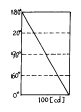
- 471 [ℓ m]
- 940 [ℓ m]
- 1880 [ℓ m]
- 7500 [ℓ m]
(정답률: 55%)
11. 배전선로에서 사용하는 개폐기의 종류가 아닌 것은?
- COS
- Recloser
- MBS
- Sectionalizer
(정답률: 53%)
12. 금속 중에서 이온화 경향이 가장 큰 물질은?
- Au
- Fe
- K
- Zn
(정답률: 61%)
13. 산업용 로봇의 무인 운전을 하기 위해서 필요한 제어는?
- 추종 제어
- 프로그램 제어
- 비율 제어
- 정치 제어
(정답률: 81%)
14. 내부 가열에 적당한 건조 방식은?
- 자외선 건조
- 적외선 건조
- 고주파 건조
- 저항 건조
(정답률: 61%)
15. SCR를 역병렬로 접속한 것과 같은 특성의 소자는?
- TRIAC
- GTO
- 광사이리스터
- 역전통 사이리스터
(정답률: 81%)
16. 전극 재료의 재료로 사용되지 않는 것은?
- 비결정질 탄소
- 천연 흑연
- 인조 흑연
- 인조 다이아몬도
(정답률: 72%)
17. 효율이 우수하고 안개지역에서 많이 사용되는 조명등은?
- 백열등
- 나트륨등
- 수은등
- 클리어 전구
(정답률: 86%)
18. 철도 통신에 있어서 유도 장해에 대한 대책을 위하여 사용되는 시설은 ?
- 선발 차단기
- 피뢰기
- 흡상 변압기
- 궤도 계전기
(정답률: 82%)
19. 강제 전선관 중 설명이 틀린 것은?
- 후강전선관과 박강전선관으로 나누어진다.
- 녹이스는것을 방지하기 위해 건식아연도금법이 사용된다.
- 폭발성 가스나 부식성 가스가 있는 장소에 적합하다
- 주로 강으로 만들고 알루미늄이나, 황동, 스테인레스 등은 강제관에서 제외된다.
(정답률: 72%)
20. 형광 방전등에서 효율이 가장 낮은 것은?
- 녹색
- 적색
- 백색
- 주황색
(정답률: 53%)
2과목: 전력공학
21. 루프(loop)배전방식에 대한 설명으로 옳은 것은?
- 전압강하가 작은 이점이 있다.
- 시설비가 적게 드는 반면에 전력손실이 크다.
- 부하밀도가 적은 농.어촌에 적당하다.
- 고장시 정전범위가 넓은 결점이 있다.
(정답률: 8%)
22. 다도체를 사용한 송전선로가 있다. 단도체를 사용했을 때와 비교할 때 옳은 것은? (단, L은 작용인덕턴스이고, C는 작용정전용량이다.)
- L 과 C 모두 감소한다.
- L 과 C 모두 증가한다.
- L 은 감소하고, C 는 증가한다.
- L 은 증가하고, C 는 감소한다.
(정답률: 11%)
23. 발전기 보호용 비율차동계전기의 특성이 아닌 것은?
- 외부 단락시 오동작을 방지하고 내부고장시에만 예민하게 동작한다.
- 계전기의 최소동작전류를 일정치로 고정시켜 비율에 의해 동작한다.
- 발전자 전류와 계전기의 차전류의 비율에 의해 동작한다.
- 외부 단락으로 인한 전기자 전류의 격증시 계전기의 최소동작전류도 증대된다.
(정답률: 5%)
24. 전원으로부터의 합성임피던스가 0.25%(10000kVA기준)인 곳에 설치하는 차단기의 용량은 몇 MVA 인가?
- 250
- 400
- 2500
- 4000
(정답률: 7%)
25. 정격 10kVA의 주상변압기가 있다. 이것의 2차측 일부하 곡선이 그림과 같을 때 1일의 부하율은 몇 % 인가?
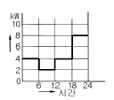
- 52.35
- 54.35
- 56.25
- 58.25
(정답률: 9%)
26. 종축에 절대온도 T, 횡축에 엔트로피 S를 취할 때 T-S선도에 있어서 단열변화를 나타내는 것은?
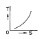
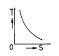
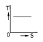
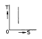
(정답률: 7%)
27. 송전 계통의 중성점 접지방식에서 유효접지라 하는 것은?
- 저항접지 및 직접접지를 말한다.
- 1선 지락사고시 건전상의 전위가 상용전압의 1.3배이하가 되도록 중성점 임피던스를 억제한 중성점접지 방식을 말한다.
- 리액터 접지방식 이외의 접지방식을 말한다.
- 저항접지를 말한다.
(정답률: 12%)
28. 장거리 송전로에서 4단자 정수가 같은 것은?
- A =B
- B =C
- C =D
- A =D
(정답률: 18%)
29. 동작전류의 크기에 관계없이 일정한 시간에 동작하는 특성을 가진 계전기는?
- 순한시계전기
- 정한시계전기
- 반한시계전기
- 반한시정한시계전기
(정답률: 13%)
30. 피뢰기의 직렬 갭(gap)의 작용은?
- 이상전압의 파고치를 저감시킨다.
- 상용주파수의 전류를 방전시킨다.
- 이상전압이 내습하면 뇌전류를 방전하고, 속류를 차단하는 역할을 한다.
- 이상전압의 진행파를 증가시킨다.
(정답률: 14%)
31. 발.변전소에서 사용되는 상분리모선(Isolated phase bus)의 특징으로 틀린 것은?
- 절연 열화가 적고 선간단락이 거의 없다.
- 다도체로서 대전류를 흘릴 수 있다.
- 기계적 강도가 크고 보수가 용이하다.
- 폐쇄되어 있으므로 안전도가 크고 외부로부터 손상을 받지 않는다.
(정답률: 7%)
32. 1일의 평균 사용유량이 35m3/s인 수력지점에 조정지를 설치하여 첨두부하시 5시간, 최대 65m3/s의 물을 사용하려고 한다. 이에 필요한 조정지의 유효 저수량은 몇m3 인가?
- 9000
- 540000
- 648000
- 900000
(정답률: 7%)
33. 3상3선식 송전선로에서 각 선의 대지정전용량이 0.5096㎌이고, 선간정전용량이 0.1295㎌일 때 1선의 작용정전용량은 몇 ㎌ 인가?
- 0.6391
- 0.7686
- 0.8981
- 1.5288
(정답률: 8%)
34. 가공전선을 200m의 경간에 가설하여 그 이도가 5m이었다. 이도를 6m로 하려면 이도를 5m로 하였을 때 보다 전선이 몇 cm 더 필요하겠는가?
- 8
- 10
- 12
- 15
(정답률: 5%)
35. 전력선 반송보호계전방식의 고장선택 방법에 해당되는 것은?
- 방향비교방식
- 전압차동보호방식
- 방향거리모선보호방식
- 고주파 억제식 비율차동보호방식
(정답률: 3%)
36. 가압수형 원자력발전소에 사용하는 연료, 감속재 및 냉각재로 적당한 것은?
- 연료:천연우라늄, 감속재:흑연, 냉각재:이산화탄소
- 연료:농축우라늄, 감속재:중수, 냉각재:경수
- 연료:저농축우라늄, 감속재:경수, 냉각재:경수
- 연료:저농축우라늄, 감속재:흑연, 냉각재:경수
(정답률: 4%)
37. 선로개폐기(LS)에 대한 설명으로 틀린 것은?
- 책임 분계점에 전선로를 구분하기 위하여 설치한다.
- 3상 선로개폐기는 3개가 동시에 조작되게 되어 있다.
- 부하상태에서도 개방이 가능하다.
- 최근에는 기중부하개폐기나 LBS로 대체되어 사용하고 있다.
(정답률: 10%)
38. 표피효과에 대한 설명으로 옳은 것은?
- 전선의 단면적에 반비례한다.
- 주파수에 비례한다.
- 전압에 비례한다.
- 도전률에 반비례한다.
(정답률: 4%)
39. 과도안정 극한전력이란?
- 부하가 서서히 감소할 때의 극한전력
- 부하가 서서히 증가할 때의 극한전력
- 부하가 갑자기 사고가 났을 때의 극한전력
- 부하가 변하지 않을 때의 극한전력
(정답률: 9%)
40. 가스절연개폐장치(GIS)의 특징이 아닌 것은?
- 감전사고 위험 감소
- 밀폐형이므로 배기 및 소음이 없음
- 신뢰도가 높음
- 변성기와 변류기는 따로 설치
(정답률: 8%)
3과목: 전기기기
41. 2대의 정격이 같은 1000[KVA]의 단상변압기의 임피던스 전압이 8[%]와 9[%]이다. 이것을 병렬로 하면 몇[KVA]의 부하를 걸 수 있는가?
- 2100
- 2200
- 1889
- 2125
(정답률: 8%)
42. 3상 유도전동기로 직류분권발전기를 구동하여 직류를 얻어 사용했었다. 유도기의 1차측 3선중 2선을 바꾸어 결선을 하고 운전하였다면 직류분권발전기의 전압은?
- 전압이 0 이 된다.
- 과전압이 유도된다.
- +, -극성이 바뀐다.
- +, -극성이 변함없다
(정답률: 6%)
43. 무부하에서 자기여자로 전압을 확립하지 못하는 직류발전기는 ?
- 직권 발전기
- 분권발전기
- 타여자 발전기
- 차동복권 발전기
(정답률: 4%)
44. 동기기에 있어서 동기 임피던스와 단락비와의 관계는?
- 동기임피이던스[Ω]=1/(단락비)2
- 단락비=동기임피던스[Ω]/동기각속도
- 단락비=1/동기임피던스[p.u]
- 동기임피던스[p.u]=단락비
(정답률: 7%)
45. 전압 2200[V], 무부하 전류 0.088[A]인 변압기의 철손이 110[W]이었다. 자화전류는?
- 약 0.⑤[A]
- 약 0.038[A]
- 약 0.0724[A]
- 약 0.088[A]
(정답률: 4%)
46. 전동기축의 벨트축 지름이 28[cm] 매분 1140회전하여 20[KW]를 전달하고 있다. 벨트에 작용하는 힘은?
- 약 122 [Kg]
- 약 168 [Kg]
- 약 212 [Kg]
- 약 234 [Kg]
(정답률: 1%)
47. 직류기의 철손에 관한 설명으로 옳지 않은 것은?
- 철손에는 풍손과 와전류손 및 저항손이 있다.
- 전기자 철심에는 철손을 작게 하기 위하여 규소강판을 사용한다.
- 철에 규소를 넣게 되면 히스테리시스손이 감소한다.
- 철에 규소를 넣게 되면 전기 저항이 증가하고 와 전류손이 감소한다.
(정답률: 6%)
48. 유도 전동기와 직결된 전기동력계(다이나모메터)의 부하전류를 증가하면 유도전동기의 속도는?
- 증가한다.
- 감소한다.
- 변함이 없다.
- 동기 속도로 회전한다.
(정답률: 4%)
49. 변압기에서 제3고조파의 영향으로 통신장해를 일으키는 3상 결선법은 ?
- △-△결선
- Y-Y결선
- Y-△결선
- △-Y결선
(정답률: 11%)
50. 동기발전기의 퍼센트 동기임피던스가 83[%]일 때 단락비는 얼마인가?
- 1.0
- 1.1
- 1.2
- 1.3
(정답률: 9%)
51. 어떤 정류회로의 부하전압이 50[V]이고 맥동률 3[%]이면 직류 출력전압에 포함된 교류분은 몇[V]인가?
- 1.2
- 1.5
- 1.8
- 2.1
(정답률: 8%)
52. 동기전동기의 여자전류를 증가하면 어떤 현상이 생기나?
- 전기자 전류의 위상이 앞선다.
- 난조가 생긴다.
- 토크가 증가한다.
- 앞선 무효 전류가 흐르고 유도 기전력은 높아진다.
(정답률: 4%)
53. 전압을 일정하게 유지하기 위해서 이용되는 다이오드는?
- 정류용 다이오드
- 바랙터 다이오드
- 바리스터 다이오드
- 제너 다이오드
(정답률: 9%)
54. 직류전동기의 규약효율은 ?
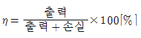
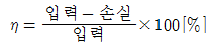
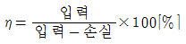
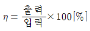
(정답률: 12%)
55. 누설변압기의 특성은 어떤것인가 ?
- 수하 특성
- 정전압 특성
- 저 저항 특성
- 저 임피던스 특성
(정답률: 8%)
56. 부하용량(선로출력) 6600[kVA]이고, 전압조정을 6600± 660[V]로 하려는 선로에 3상 유도전압조정기의 용량은?(오류 신고가 접수된 문제입니다. 반드시 정답과 해설을 확인하시기 바랍니다.)
- 6000[kVA]
- 3000[kVA]
- 1500[kVA]
- 660[kVA]
(정답률: 4%)
57. 병렬운전하는 두 대의 3상동기발전기에서 무효순환전류가 흐르는 경우는?
- 계자전류가 변할 때
- 위상이 변할 때
- 파형이 변할 때
- 부하가 변할 때
(정답률: 3%)
58. 그림과 같은 단상 전파제어회로의 전원 전압의 최대치가 2300[V]이다. 저항 2.3[Ω ], 유도리액턴스가 2.3[Ω ]인 부하에 전력을 공급하고자 한다. 제어 범위는?
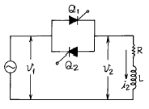
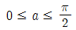
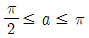
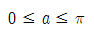
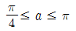
(정답률: 4%)
59. 변압기권선을 건조하는데 맞지 않은 것은?
- 진공법
- 단락법
- 반환부하법
- 열풍법
(정답률: 3%)
60. 직권계자 권선저항 0.2[Ω], 전기자 저항 0.3[Ω]의 직권전동기에 200[V]를 가하였더니 부하전류 20[A]였다. 이때 전동기의 속도[rpm]는? (단, 기계정수는 3.0 이다)
- 1140
- 1560
- 1710
- 1930
(정답률: 9%)
4과목: 회로이론 및 제어공학
61. 단위 계단 입력에 대한 정상편차가 유한값이면 이 계는 무슨 형인가?
- 0
- 1
- 2
- 3
(정답률: 7%)
62. R =2[Ω ], L= 10[mH], C= 4[μF]의 직렬 공진 회로의 Q는?
- 25
- 45
- 65
- 85
(정답률: 14%)
63. 회로에서 4단자 정수 A, B, C, D 의 값은?
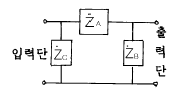
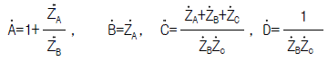
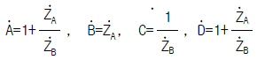
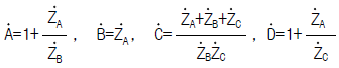
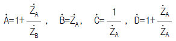
(정답률: 17%)
64. 기전력 3[V], 내부 저항 0.2[Ω ]인 전지 6개를 직렬로 접속하여 단락시켯을 때의 전류[A]는?
- 30
- 25
- 15
- 10
(정답률: 12%)
65. 시간 구간 a, 진폭이 1/a인 단위 펄스에서 a → 0 에 접근할 때의 단위 충격 함수에 대한 Laplace 변환은?
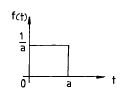
- a
- 1
- 0
- 1/a
(정답률: 9%)
66. 3상 불평형 전압에서 역상전압이 50[V]이고 정상전압이 250[V] 영상전압이 20[V]이면, 전압의 불평형률은 몇[%] 인가?
- 10
- 15
- 20
- 25
(정답률: 12%)
67. 분포정수 선로에서 위상 정수를 β [rad/m]라 할 때 파장은?
- 2πβ
- 2π/β
- 4πβ
- 4π/β
(정답률: 11%)
68. 어떤 계를 표시하는 미분 방정식이
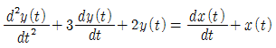
라고 한다. x(t)는 입력, y(t)는 출력이라고 한다면 이 계의 전달 함수는 어떻게 표시되는가?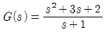
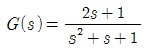
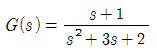
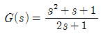
(정답률: 17%)
69. 아래와 같은 시스템에서 이 시스템이 안정하기 위한 K의 범위를 구하면?
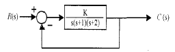
- 0 < K < 6
- 1 < K < 5
- -1 < K < 6
- -1 < K < 5
(정답률: 11%)
70. 전원과 부하가 △결선된 3상 평형회로가 있다. 전원 전압이 200[V],부하 1상의 임피던스가 6+j8[Ω]라면 선전류는 몇 [A]인가?
- 20
- 28.3
- 34.6
- 47.2
(정답률: 12%)
71. s평면의 우반면에 3개의 극점이 있고, 2개의 영점이 있다 이때 다음과 같은 설명 중 어느 나이퀴스트 선도일 때 시스템이 안정한가?
- (-1, j0) 점을 반 시계방향으로 1번 감쌌다.
- (-1, j0) 점을 시계방향으로 1번 감쌌다.
- (-1, j0) 점을 반 시계방향으로 5번 감쌌다.
- (-1, j0) 점을 시계방향으로 5번 감쌌다.
(정답률: 7%)
72. T를 샘플주기라고 할때 Z-변환은 라프라스 변환 함수의 S대신 어느것을 대입하여야 하는가?
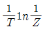
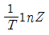
- T1nZ
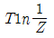
(정답률: 11%)
73. 다음 회로는 무엇을 나타낸 것인가?
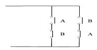
- AND
- OR
- Exclusive OR
- NAND
(정답률: 20%)
74. 다음 회로의 전달함수는?
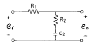
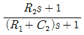
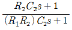
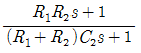
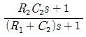
(정답률: 11%)
75. 방정식으로 표시되는 제어계가 있다. 이 계를 상태 방정식
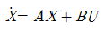
로 나타내면 계수 행렬 A는 어떻게 되는가?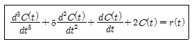
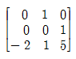
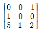
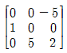
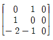
(정답률: 10%)
76. 루프 전달함수
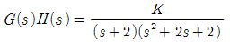
의 근궤적에서 S=-1+j에서의 출발각(K>0)은?- 30°
- 45°
- 60°
- 90°
(정답률: 13%)
77. 그림과 같은 회로망은 어떤 보상기로 사용할 수 있는가? (단, 1≪R1C인 경우로 한다.)
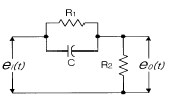
- 진상보상기
- 지상보상기
- 지· 진상보상기
- 진· 지상보상기
(정답률: 14%)
78. 비정현파를 바르게 나타낸 것은?
- 교류분+고조파+기본파
- 직류분+기본파+고조파
- 기본파+고조파-직류분
- 직류분+고조파-기본파
(정답률: 12%)
79. 다음과 같은 회로에서 t=0+ 에서 스위치 K 를 닫았다. i1(0+), i2(0+)는 얼마인가?
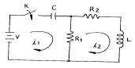
- i1(0+) = 0, i2(0+) = V/R2
- i1(0+) = V/R1, i2(0+) = 0
- i1(0+) = 0, i2(0+) = 0
- i1(0+) = V/R1, i2(0+) = V/R2
(정답률: 11%)
80. 안정된 제어계의 특성근이 2개의 공액복소근을 가질때이 근들이 허수축 가까이에 있는 경우 허수축에서 멀리 떨어져 있는 안정된 근에 비해 과도응답 영향은 어떻게 되는가?
- 천천히 사라진다.
- 영향이 같다
- 빨리 사라진다.
- 영향이 없다.
(정답률: 9%)
5과목: 전기설비기술기준 및 판단기준
81. 전로의 사용전압이 400V미만이며, 대지전압이 150V이하인 경우, 이 전로의 절연저항은 몇 M牆 이상이어야 하는가?
- 0.1
- 0.2
- 0.3
- 0.4
(정답률: 5%)
82. 사용전압이 380V인 저압 보안공사에 사용되는 경동선은 그 지름이 최소 몇 mm 이상의 것을 사용하여야 하는가?
- 2.0
- 2.6
- 4
- 5
(정답률: 5%)
83. 일반주택의 저압 옥내배선을 점검하였더니 다음과 같이 시공되어 있었다. 잘못 시공된 것은?
- 욕실의 전등으로 방습 형광등이 시설되어 있다.
- 단상3선식 인입개폐기의 중성선에 동판이 접속되어 있었다.
- 합성수지관공사의 관의 지지점간의 거리가 2m로 되어 있었다.
- 금속관공사로 시공하였고 ＩV전선이 사용되었다.
(정답률: 10%)
84. 전동기 등에만 이르는 저압 옥내전로의 과전류 차단기는 그 과전류 차단기에 직접 접속하는 부하측의 전선의 허용전류가 40A인 경우 정격전류가 몇 A 이하인 것을 사용하여야 하는가?
- 50
- 60
- 100
- 125
(정답률: 4%)
85. 통신상의 유도장해를 방지하기 위하여 직류 단선식 전기철도용 급전선로가 단선식 전화선로를 제외한 기설 가공약 전류전선로와 병행하여 시설될 때, 특별한 경우를 제외하고 이격거리는 몇 m 이상으로 하여야 하는가?
- 2.5
- 3
- 3.5
- 4
(정답률: 1%)
86. 제1종특별고압보안공사로 시설하는 전선로의 지지물로 사용할 수 없는 것은?
- 철탑
- B종철주
- B종철근콘크리트주
- 목주
(정답률: 9%)
87. 금속관공사를 콘크리트에 매설하여 시행하는 경우 관의 두께는 몇 ㎜ 이상인가?
- 1.0
- 1.2
- 1.4
- 1.6
(정답률: 12%)
88. 차량 기타 중량물의 압력을 받을 우려가 없는 장소에 지중 전선로를 직접 매설식에 의하여 시설하는 경우, 매설 깊이는 최소 몇 cm 이상으로 하면 되는가?
- 30
- 60
- 80
- 100
(정답률: 13%)
89. 특별고압절연전선을 사용한 22900V가공전선과 안테나와의 최소 이격거리는 몇 m 인가? (단, 중성선 다중접지식의 것으로 전로에 지기가 생겼을때, 2초이내에 자동적으로 이를 전로로부터 차단하는 장치가 되어 있음)
- 1.0
- 1.2
- 1.5
- 2.0
(정답률: 4%)
90. 출퇴표시등회로에 전기를 공급하기 위한 변압기는 2차측 전로의 사용전압이 몇 V 이하인 절연변압기 이어야 하는가?
- 40
- 60
- 80
- 100
(정답률: 8%)
91. 저압전로를 절연변압기로 결합하여 특별고압 가공전선로 의 철탑 최상부에 설치한 항공장해등에 이르는 저압전로 가 있다. 이 절연변압기의 부하측 1단자 또는 중성점에는 제 몇 종 접지공사를 하여야 하는가?
- 제1종접지공사
- 제2종접지공사
- 제3종접지공사
- 특별제3종접지공사
(정답률: 8%)
92. 사용전압 22900V 가공전선이 건조물과 제2차 접근상태로 시설되는 경우에 22900V 가공전선로의 보안공사 종류는?
- 고압 보안공사
- 제1종 특별고압 보안공사
- 제2종 특별고압 보안공사
- 제3종 특별고압 보안공사
(정답률: 8%)
93. 버스덕트공사에 의한 저압 옥내배선의 사용전압이 400V미만인 경우 덕트에는 몇 종 접지공사를 하여야 하는가?
- 제1종접지공사
- 제2종접지공사
- 제3종접지공사
- 특별제3종접지공사
(정답률: 13%)
94. 방직공장의 구내 도로에 220V 조명등용 가공전선로를 시설하고자 한다. 전선로의 경간은 몇 m 이하이어야 하는가?
- 20
- 30
- 40
- 50
(정답률: 4%)
95. 고압가공전선에 경동선을 사용하는 경우 안전율은 얼마 이상이 되는 이도로 시설하여야 하는가?
- 2.0
- 2.2
- 2.5
- 2.6
(정답률: 8%)
96. 발전소에는 필요한 계측장치를 시설해야 한다. 다음 중 시설을 생략해도 되는 계측장치는?
- 발전기의 전압 및 전류
- 주요 변압기의 역률
- 발전기의 고정자 온도
- 특별고압용 변압기의 온도
(정답률: 16%)
97. 과전류차단기로 저압전로에 사용하는 정격전류 30A인 퓨즈를 수평으로 붙인 경우 정격전류의 2배의 전류를 통하였을 때 몇 분안에 용단되어야 하는가?
- 2
- 4
- 6
- 8
(정답률: 12%)
98. 사용전압이 400V이상인 저압 가공전선을 동복강선 또는 케이블인 경우 이외에 시가지에 시설하는 것은 지름 몇 mm 의 경동선 또는 이와 동등이상의 세기 및 굵기의 것 이어야 하는가?
- 3.2
- 3.5
- 4
- 5
(정답률: 2%)
99. 고압 가공전선로의 지지물에 시설하는 통신선의 높이는 도로를 횡단하는 경우 지표상 6m이상으로 하여야 한다. 그러나 교통에 지장을 줄 우려가 없을 경우에는 지표상 몇 m 까지로 감할 수 있는가?
- 4
- 4.5
- 5
- 5.5
(정답률: 9%)
100. 건조한 장소로서 전개된 장소에 한하여 고압옥내배선을 할 수 있는 것은?
- 애자사용공사
- 합성수지관공사
- 금속관공사
- 가요전선관공사
(정답률: 7%)
보기에서 프레온은 분자 구조가 대칭적이고 전자 수가 많아 절연 내력이 크며, SF6은 분자 구조가 대칭적이고 전자 수가 많아 절연 내력이 큽니다. 반면에 공기는 분자 구조가 비대칭적이고 전자 수가 적어 절연 내력이 작으며, 수소는 분자 구조가 단순하고 전자 수가 적어 절연 내력이 작습니다. 따라서 "프레온, SF6, 공기, 수소" 순서로 배열된 것입니다.